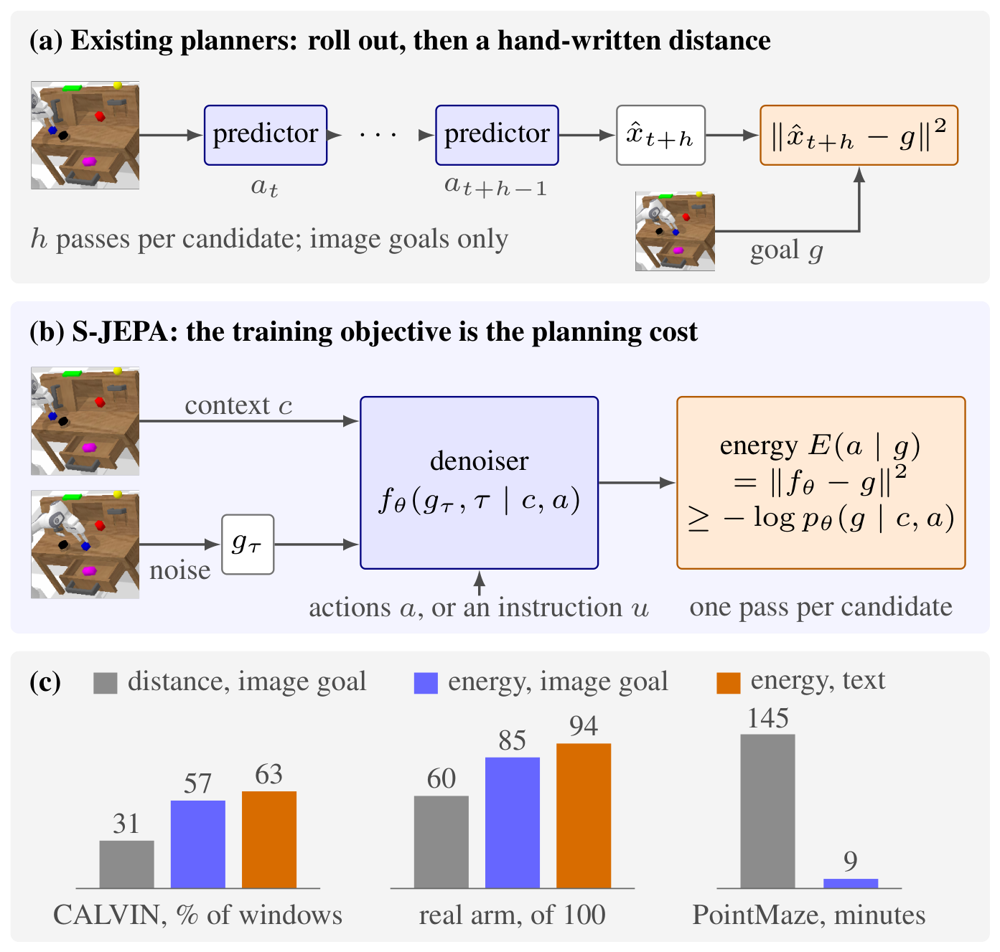
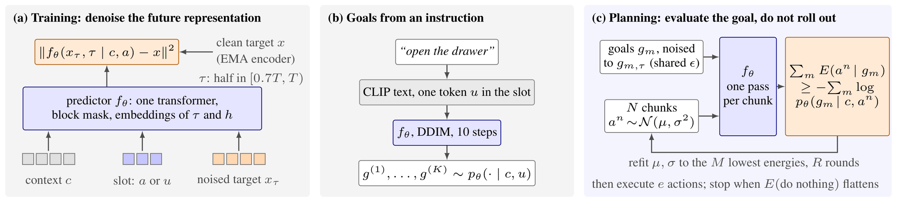
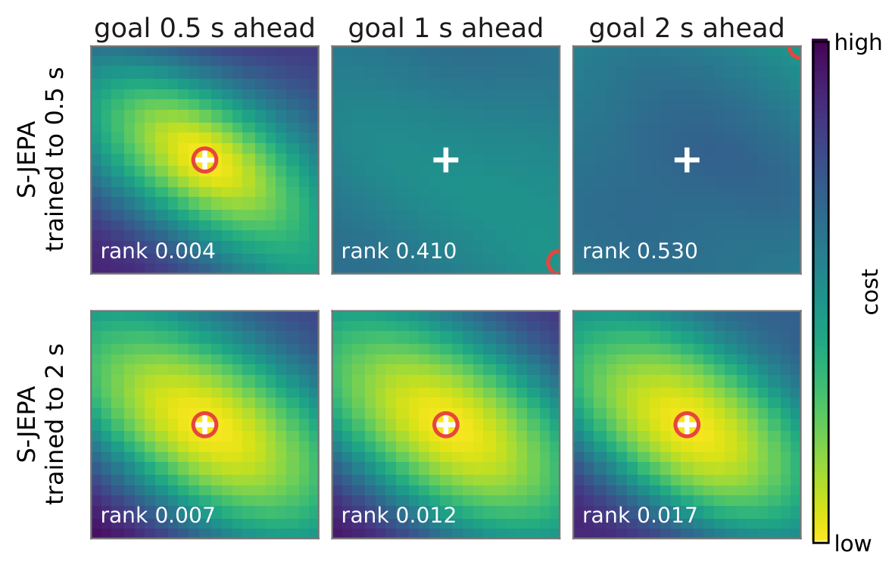
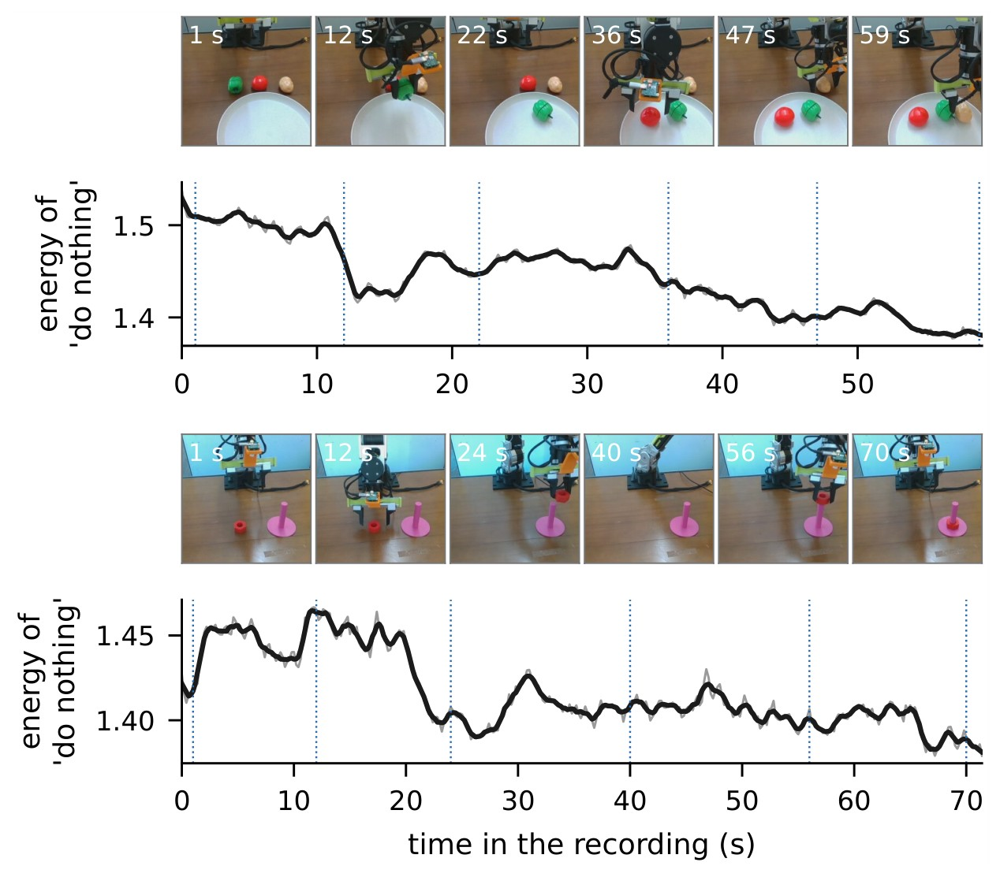

Under review
A Score-Based Theory of Joint-Embedding World Models
New York University Abu Dhabi
* equal contribution

Joint-embedding world models predict the future in representation space, and a robot plans with them by scoring imagined outcomes against a goal. The score is written by hand: a distance between the latent rolled out to the horizon and the goal latent. It treats an implausible goal like a likely one, sees the goal at one fixed scale, accepts only image goals, and costs a rollout per candidate.
We take a different view of the same model. Under denoising score matching, the predictor’s objective at a goal bounds the negative log-likelihood of that goal under the candidate actions, and the hand-written distance is this bound’s term at the highest noise level. Planning is then likelihood evaluation: one forward pass per candidate, with no rollout and no distance function. The noise level sets the resolution of the cost, the training horizon sets its range, and goals multiply, so an image, several views and a language instruction condition one energy. The same reading says how to train the predictor: predict the clean target at the noise levels where the actions are read.
The resulting model, S-JEPA, plans CALVIN manipulation through a frozen video encoder from the instruction alone, completing 63% of the validation windows against 31% for the hand-written distance from a goal image. Where the actions leave the future undetermined, it reaches the goal in 0.86 of instances against 0.38. Read from the released navigation world model without training, the energy reaches the official rollout planner’s error in a fortieth of its time, and on PointMaze it matches the DINO-WM planner in a sixteenth. On a real robot arm it completes 85 of 100 trials from a goal image against 60 for the hand-written distance, and 94 from typed instructions.
A joint-embedding predictor is trained once, on video and the actions taken in it, and then asked to plan for any goal. The cost that says how good an imagined future is has so far been written by hand after training. A predictor trained by denoising score matching already carries that cost: its training loss evaluated at a goal, averaged over noise levels and noise draws, bounds the negative log-likelihood of the goal under the candidate actions. At the highest noise level the bound reduces to the latent distance between prediction and goal, so latent-distance planning is the high-noise limit of score-based planning.



@misc{hu2026sjepa,
title = {Planning as Likelihood Evaluation: A Score-Based Theory of Joint-Embedding World Models},
author = {Hu, Junyi and He, Zhewen and Liang, Jiazhao and Huang, Haomian and Yuan, Shuaihang and Fang, Yi},
year = {2026},
note = {Preprint}
}